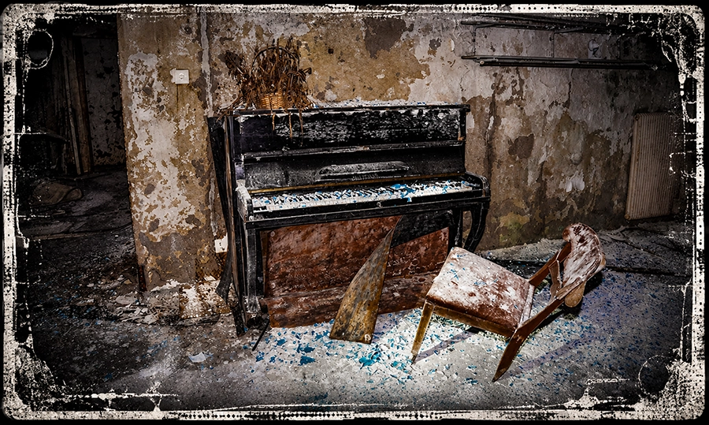
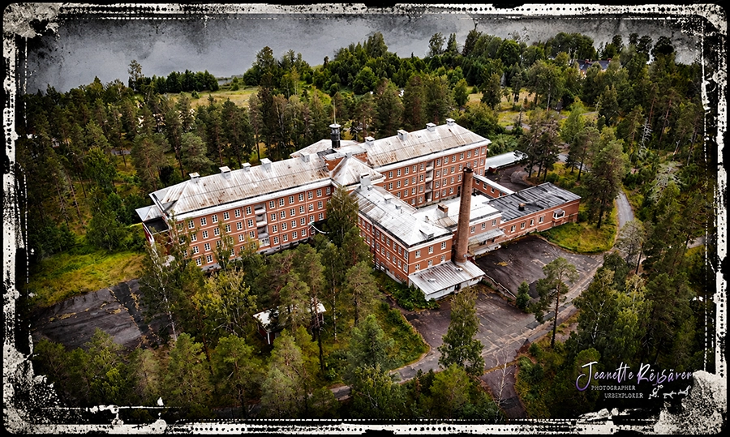
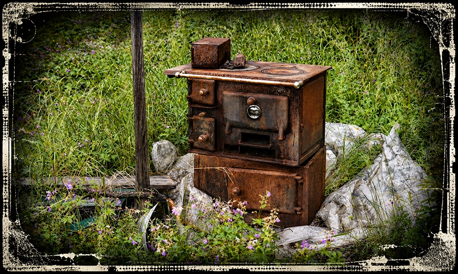
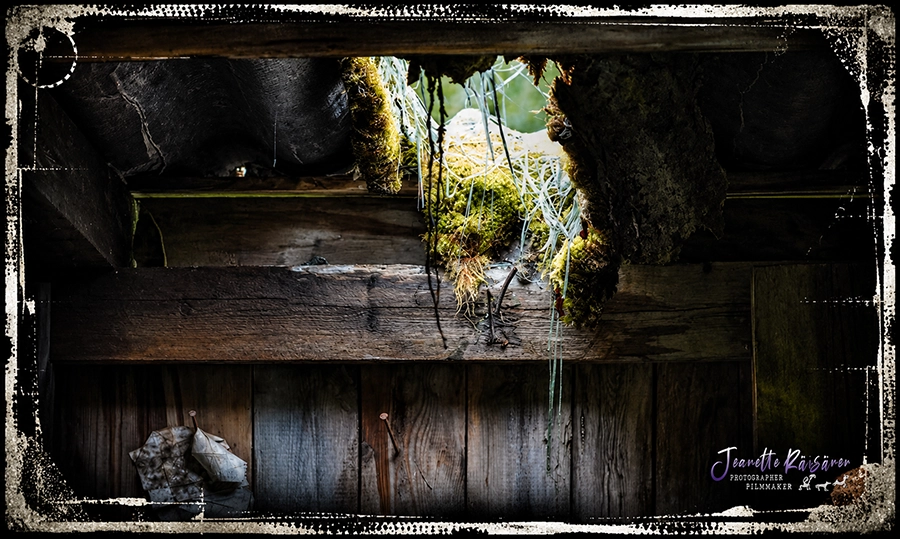

Övergivna Världar, ruiner av ett annat liv
Urban exploration, eller urbex, är konsten att upptäcka platser som tiden tycks ha glömt. Bakom rostiga dörrar och spruckna fönster väntar övergivna hus, industrier och andra miljöer där människorna försvunnit men spåren finns kvar. Varje plats bär på en historia. Kvarlämnade möbler, bleknade fotografier och maskiner täckta av damm väcker frågor om vilka som en gång levde och arbetade där. För mig handlar urbex om nyfikenhet, fotografering och känslan av att kliva rakt in i det förflutna. Tystnaden, förfallet och ovissheten skapar en särskild atmosfär. Man vet aldrig vad som väntar runt nästa hörn eller vilken bortglömd historia som fortfarande gömmer sig där.

Ett tyst piano i förfall – kvarlämnat som ett eko från en tid då rummet fortfarande var fyllt av liv.

Drönarfoto: Sandträsk sanatorium sett från ovan, med den gamla krematorieskorstenen framför huvudbyggnaden.

En gammal vedspis, en gång hemmets hjärta – nu rostig och övergiven åt naturen.

Ett övergivet trähus där taket gett vika och naturen sakta letar sig in i det som en gång var ett hem.
Hur ska man börja?
| Ödehus | Vad man kan hitta | Fotomotiv | Känsla |
|---|---|---|---|
| Övergivna hus | Gamla möbler, böcker, kläder | Förfallna rum, tapeter, fönster | Melankoli, nostalgi |
| Industrier | Maskiner, verktyg, rostiga rör | Stora hallar, maskinrum, skorstenar | Storslagenhet, mystik |
| Sanatorier | Medicinsk utrustning, sängar, journaler | Sjukhussalar, korridorer, trapphus | Spöklikhet, historia |
Wikipedia: Urban Exploration